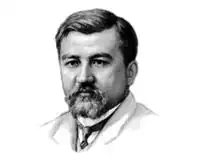

Олександр Іванович Купрін Народився 26
серпня (7 вересня) 1870 року в невеликому містечку Наровчате Пензенської
губернії в сім'ї потомственого дворянина, дрібного чиновника Івана Івановича Куприна. Батька свого Купрін не пам'ятав, він помер від холери в 1872 р. Овдовіла мати — Любов Олексіївна Купріна, уроджена княжна Куланчакова — в 1874 р., залишившись без засобів до існування, була змушена з 3 дітьми покинути Наровчат і оселитися у Москві у вдову будинку. Старшу доньку їй вдалося влаштувати в Петербурзький жіночий пансіон, а середню — у Московський сирітський. У вдову будинку Любов Олексіївна доглядала за хворими. Спочатку Саша жив разом з матір'ю. Однак, у 1876 році з-за важкого матеріального становища Любов Олексіївна була змушена віддати сина в сирітське училище. Семирічний хлопчик одягнув першу в своєму житті форму — парусинові панталони і парусинову сорочку, обшиту навколо ворота і навколо рукавів форменого кумачевої стрічкою. У 1880 році він склав вступні екзамени в Другу московську військову гімназію, пізніше перейменовану в кадетський корпус. Юний Купрін мріяв стати відважним офіцером, зробити подвиги і заслужити бойові ордени. Закінчивши кадетський корпус, восени 1888 року Купрін поступив в Третє Олександрівське юнкерського училища в Москві. Роки навчання в юнкерському училище для Олександра Купріна були часом військової романтики і відчайдушного товариства, часом першої любові і першою, не зовсім вдалою, публікації. У 1889 році в журналі "Російський сатиричний листок" А.І. Купрін 10-ти років — була опублікована розповідь Купріна вихованець другий "Останній дебют". Перший смак Московської військової слави, перший гонорар і дві доби гімназії арешту за "недбале вивчення статуту внутрішньої служби", оскільки юнкери не мали права друкувати свої твори без дозволу начальства. Після закінчення училища О. І. Купрін чотири роки служив підпоручиком 46-го Дніпровського піхотного полка. Прожите і побачене за роки служби в полку стало основою для написання одного з головних творів письменника — повісті "Поєдинок". У 1893 році молодий підпоручик закінчує повість "Впотьмах", оповідання "Місячної вночі" та "Дізнання", але не надає цьому особливого значення. "Письменником я став випадково", — пізніше скаже Купрін. Військова кар'єра Олександра Купріна закінчилася в 1894 році, причиною стало зіткнення на шляху до Петербургу з околодочним наглядачем (поліцейським), груба настирливість якого закінчилася для нього вимушеним купанням у Дніпрі. Про подію доповіли, і наказом командувача військами Київського округу Купрін не був допущений до здачі іспитів в Миколаївську академію Генерального штабу. Він подовгу лежав на ліжку в своїй, описаної в "Поєдинку", комірчині, розмірковуючи про те, що військові — це саме нещасне стан. Що поручик, капітан, генерал може бути ким завгодно: сміливців, боягузом, негідником, злодієм, п'яницею, чесною і порядною людиною — але щасливим ніколи. Тільки вийшовши у відставку, Купрін знаходить довгоочікувану свободу, однак колишній офіцер не готовий до вільного життя. Оселившись у Києві, не маючи певної громадянської професії, він пробує себе в різних сферах діяльності — працює вантажником, комірником, лісовим об'їждчиком, землеміром, коректором. Потім Олександр Купрін влаштувався репортером у газету — судова і поліцейська хроніка, писання фейлетонів — головна літературна школа Куприна. Стрімке творчий розквіт Купріна, відноситься до рубежу 19 і 20 століть. У ці роки автором створені найзначніші твори. Слідом за повістю "молох", опублікованій в 1896 році на сторінках грудневого номеру журналу "Русское багатство", з'являються твори, які висунули письменника в перші ряди російської літератури — "Прапорщик армійський" (1897), "Олеся" (1898), а потім, вже на початку XX століття, — "У цирку" (1901), "Конокради" (1903), "Білий пудель" (1903) і повість "Поєдинок" (1905). У 1901 році Купрін приїжджає до Петербурга. Позаду роки поневірянь, калейдоскоп химерних професій, невлаштоване життя. У ці роки він знайомиться з Чеховим, Вересаева, Леонідом Андрєєвим, Горьким, Сашею Чорним, Корнієм Чуковським, Теффі. У 1902 році письменник одружується на дочці видавця журналу "Світ Божий" — Давидової Марії Карлівні. Деякий час він діяльно співробітничає в "Світі Божому" і як редактор, а також друкує там ряд своїх творів: "У цирку", "Болото". У 1903 році виходить перша збірка оповідань письменника. Після поїздки в 1907 році до Фінляндії вона одружується вдруге, на племінниці Д. Н. Маміна-Сибіряка, Єлизаветі Моріцовне Гейнріх. Протягом першого десятиліття 1900-х років талант Купріна досягає найвищого розквіту. У 1909 році письменник отримав за три томи художньої прози академічну Пушкінську премію, поділивши її з І. А. Буніним. У 1912 році у видавництві Л. Ф. Маркса виходить зібрання його творів у додатку до популярного журналу "Ніна". Під час Першої світової війни письменник організував на особисті кошти в своєму будинку в Гатчині військовий госпіталь, доглядала за пораненими його друга дружина. Сам Купрін відправляється на фронт, але незабаром його демобілізували за станом здоров'я. Лютневу революцію Олександр Купрін прийняв із захопленням інтелігента, але до більшовицького перевороту поставився насторожено. Творчість Купріна в роки між двома революціями протистояло занепадницьким настроям тих років: цикл нарисів "Лістригони" (1907-11), розповіді про тварин, оповідання "Суламіф", "Гранатовий браслет" (1911). Його проза стала помітним явищем російської літератури початку століття. Після Жовтневої революції письменник не прийняв політику військового комунізму, "червоний терор", він відчув страх за долю російської культури. Восени 1919, знаходячись в Гатчині, відрізаною від Петрограда військами Юденича, емігрував за кордон. Сімнадцять років які письменник провів у Парижі, були малопродуктивним періодом. Тільки в 1927 році виходить збірка Купріна "Нові повісті й оповідання". Слідом за цим збірником з'являються книги "Купол св. Ісаакія Далматського "(1928) та" Елань "(1929). Оповідання, що публікувалися в газеті "Відродження" в 1929-1933 роках, входять до збірок "Колесо часу" (1930) і "Жанета" (1932-1933). З 1928 гола Купрін друкує розділи з роману "Юнкера", що вийшли окремими виданням у 1933 році. Всі ці роки на чужині А. І. Купрін дуже сумував за Батьківщиною, з російської природі, по живому російській мові. Письменник твердо вирішив повернутися до Росії. Навесні 1937 року його мрія, нарешті, збулася. І вже 31 травня 1937 Москва зустріла письменника. Вся країна негайно ж дізналася про його приїзд. Однак це вже був зовсім не той Купрін, яким його пам'ятали сучасники. Виїхав він міцним і сильним, а повернувся зовсім хворим, безпомічним. Тим не менш, Купрін сподівається написати про нову Росію. Він поселяється в Голіцинському Будинку творчості письменників, де його відвідують старі друзі, журналісти та просто шанувальники його таланту. Останні дні — зиму і літо 1938 року — Купрін провів у Ленінграді і Гатчині. Важка хвороба (рак) завадила Купріну відновити творчу роботу. 25 серпня 1938 Олександр Іванович Купрін помер Основні віхи життя А. І. Купріна • 26 серпня (7 вересня) 1870 — A. І. Купрін народився в м.Наровчат Пензенської губернії в сім'ї чиновника. • 1890 — закінчивши юнкерського училища, надходить в армію. • 1894 — A. І. Купрін залишає військову службу, працює вантажником, актором, організовує цирк, управляє маєтком, співпрацює у місцевих газетах як репортер і фейлетоніст. У ранніх творах співчутливо малює потребу бідняків ("Чудовий лікар" 1897), трагічну долю артистки цирку ("Allez!" 1897), знущання над солдатом ("Дізнання" 1894, "Нічна зміна" 1899). Гуманістичний про тест проти поневолення особистості міститься в повісті "Молох" (1896). Купрін протиставляє згубної міської "цивілізації" природне життя в спілкуванні з природою ("Олеся" 1898, "Чорний туман" 1905). • 1905-07 — зближення з видавництвом "Знання" та О. М. Горьким.1905 — "Поєдинок". • 1907-1919 — виходять повісті й оповідання. В оповіданнях "Гамбринус" (1907), "Гранатовий браслет" (1911) непідкупність, благородство почуттів протиставляє вульгарності, лицемірства буржуазної моралі. Захоплюється екзотичними, біблійними мотивами ("Суламіф" 1908), у повісті "Яма" (1909-15) віддає дань натуралізму, пояснюючи проституцію не соціальними, а біологічними причинами. • 1919 — еміграція до Парижа. • 1937 — повернення в СРСР. • 25 серпня 1938 — A. І. Купрін помер. Творчість О. І. Купріна (список основних творів) Повісті і романи • 1892 — "В темряві" • 1896 — "Молох" • 1897 — "Прапорщик армійський" . 1898 — "Олеся" . 1900 — "У" (Кадети) . 1905 — "Двобій" . 1909-1915 — "Яма" . 1907 — "Гамбринус" . 1908 — "Суламіф" . 1910 — "Гранатовий браслет" . 1913 — "Рідке сонце" . 1917 — "Зірка Соломона" . 1929 — "Колесо часі" . 1928-1932 — "Юнкери" . 1933 — "Жанета" Розповіді . 1889 — "Останній дебют" . 1892 — "Психея" . 1893 — "Місячної ночі" . 1894 — "Дізнання", "Слов'янська душа", "Кущ бузку", "Негласна ревізія", "До слави", "Безумство", "На роз'їзді", "Аль-Ісса", "Забутий поцілунок", "Про те, як професор Леопарді ставив мені голос " . 1895 — "Воробей", "Іграшка", "У звіринці", "Благальниці", "Картина", "Страшна хвилина", "М'ясо", "Без назви", "Нічліг", "Мільйонер", "Піратка", " Лолі "," Свята любов "," Локон "," столітник "," Життя " . 1896 — "Дивний випадок", "Бонза", "Жах", "Наталія Давидівна", "Напівбог", "Блаженний", "Ліжко", "Казка", "шкапа", "Чужий хліб", "Друзі", " Маріанна "," Собаче щастя "," На річці " . 1897 — "Сильніше смерті", "Чари", "Каприз", "Первісток", "Нарцис", "Брегет", "Перший зустрічний", "Плутанина", "Чудесний лікар", "Барбос і Жулька", " дитячий сад "," Allez! " . 1898 — "Самотність" . 1899 — "Нічна зміна", "Щаслива картка", "В надрах землі" . 1900 — "Дух століття", "Загибла сила", "Тапер", "Кат" . 1901 — "Сентиментальний роман", "Осінні квіти", "На замовлення", "Похід", "У цирку", "Срібний вовк" . 1902 — "На спокої" . 1903 — "Конокради", "Як я був актором", "Білий пудель" . 1904 — "Вечірній гість", "Мирне житіє", "Чад", "Жидівка", "Діаманти", "Порожні дачі", "Білі ночі", "З вулиці" .